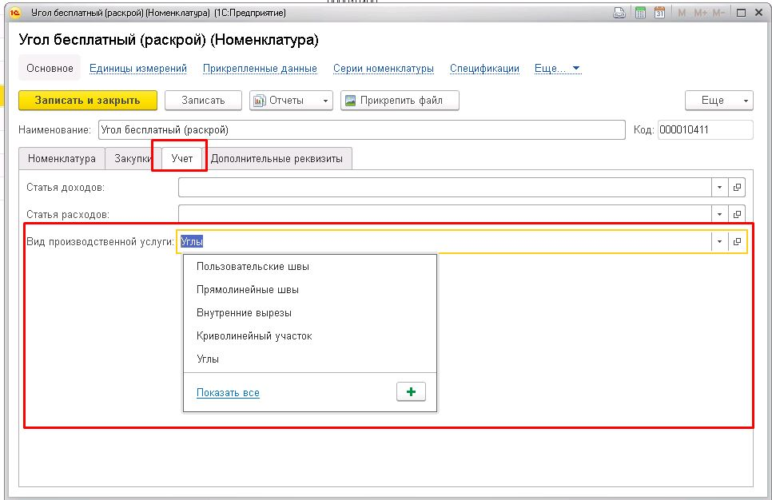

Для правильного разнесения данных по видам услуг раскроя, необходимо в карточках номенклатур, относящихся к раскрою, на вкладке "Учет" заполнить значение поля "Вид производственной услуги".

Особенности учета по многофактурным потолкам.
При группировке или при фильтрации отчета по материалу возможна ситуация, когда данные по количеству продукции данного выпуска задваивается. Это связано с тем, что в программе нельзя точно определить на какое количество продукции какое количество пленки было отнесено в многофактурных потолках.